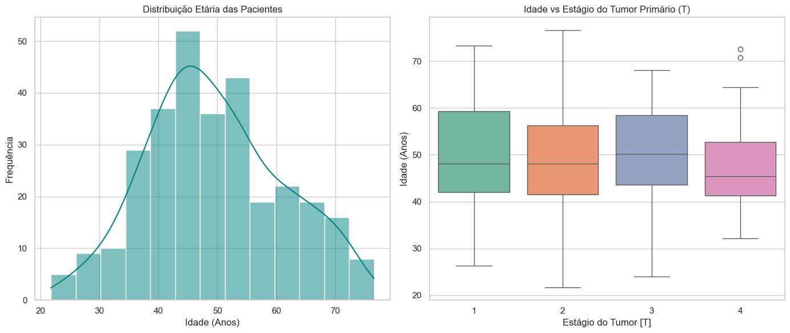
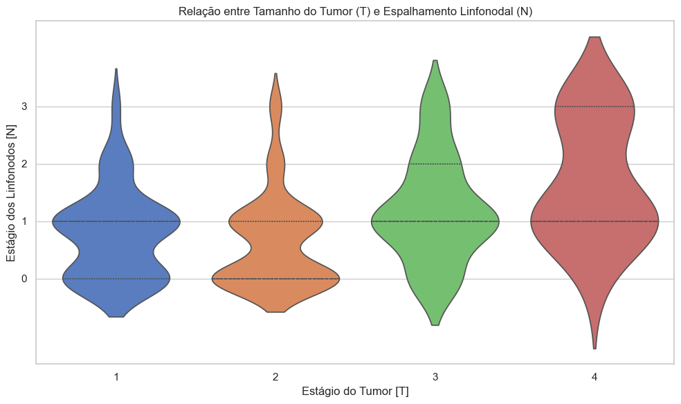
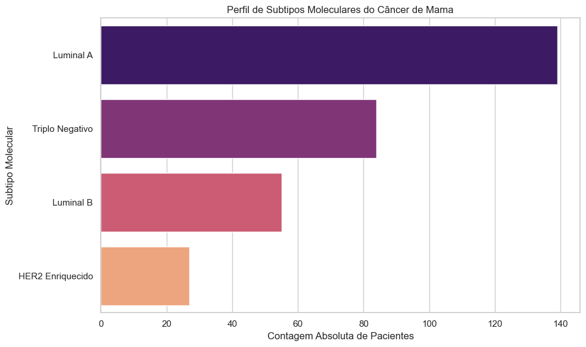
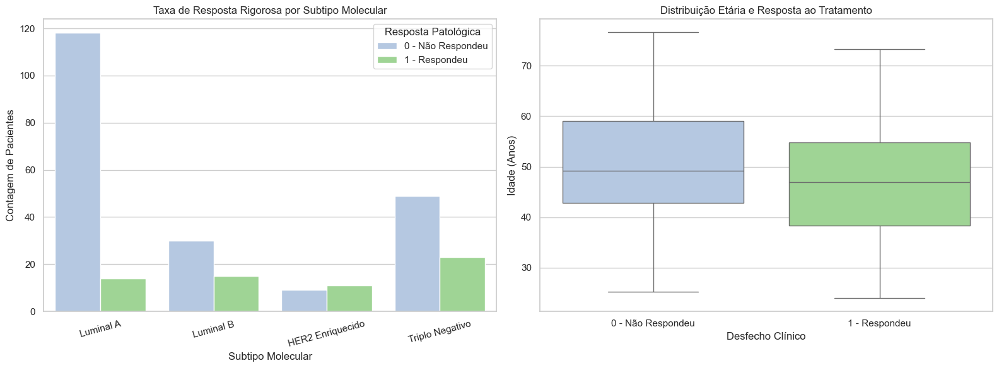

1. Objetivo e Preparação dos Dados
O objetivo desta Análise Exploratória de Dados (EDA) é avaliar padrões clínicos e moleculares em pacientes com câncer de mama. Durante a etapa de engenharia de dados, os seguintes tratamentos foram aplicados:
- Tratamento de Inconsistências: Valores textuais como 'NA', 'NC', 'NP' e 'x' foram convertidos rigorosamente para nulos (NaN).
- Qualidade dos Dados: Colunas com 100% de ausência de dados (como Unnamed: 98 e Unnamed: 67) foram descartadas, bem como linhas com dados faltantes em variáveis críticas (idade, estadiamento T/N e subtipo molecular).
- Engenharia de Atributos: A métrica de idade das pacientes foi convertida de dias para anos para facilitar a interpretabilidade.
Glossário
- NaN
- marcador usado pela biblioteca Pandas para indicar um valor ausente. Neste estudo, os códigos "NA", "NC", "NP" e "x" do conjunto de dados foram convertidos em NaN.
- Unnamed: 98 e Unnamed: 67
- nomes que o Pandas dá automaticamente a colunas sem título no arquivo original. Essas duas colunas não têm nenhum valor preenchido (100% de ausência).
- Neoadjuvante
- tratamento sistêmico, como a quimioterapia, aplicado antes da cirurgia, com o objetivo de reduzir o tumor. A resposta a esse tratamento é avaliada no tecido retirado na cirurgia.
- Estadiamento T/N
- parte do sistema TNM de classificação do câncer. O T descreve o tamanho e a extensão do tumor primário, de T1 (menor) a T4 (maior). O N descreve o comprometimento dos linfonodos regionais, de N0 (nenhum linfonodo acometido) a N3 (maior comprometimento).
- Boxplot
- gráfico que resume uma distribuição numérica. A caixa vai do primeiro ao terceiro quartil, onde estão os 50% centrais dos valores; a linha interna marca a mediana; as hastes mostram a dispersão dos demais valores, e pontos isolados indicam valores atípicos.
- Gráfico de violino
- gráfico que combina um resumo por quartis com uma curva de densidade espelhada. Quanto mais largo o violino em determinada altura, mais pacientes se concentram naquele valor. Neste site, as linhas tracejadas internas marcam os quartis.
- HER2
- sigla, em inglês, do receptor 2 do fator de crescimento epidérmico humano, uma proteína da superfície das células. Tumores com excesso dessa proteína formam o subtipo HER2 Enriquecido e podem ser tratados com terapias-alvo dirigidas a ela.
2. Panorama Demográfico
A análise da base populacional limpa revelou que a idade média das pacientes diagnosticadas é de aproximadamente 49,52 anos (mediana de 48,09 anos, com desvio padrão de 11,38 anos).
O gráfico abaixo cruza a distribuição etária com o estágio de gravidade do tumor (T), permitindo inferir visualmente se há uma tendência de diagnóstico tardio baseada na idade da paciente.

Ver dados do gráfico
A figura tem dois painéis. À esquerda, um histograma da idade das 305 pacientes analisadas, com curva de densidade: a mediana é de 48,1 anos e metade das pacientes tem entre 42,0 e 56,8 anos. À direita, a idade é comparada entre os estágios do tumor primário, de T1 a T4: as medianas são 48,1, 48,0, 50,2 e 45,5 anos, e as caixas se sobrepõem, sem indicar que pacientes mais jovens ou mais velhas cheguem ao diagnóstico em estágios mais avançados.
| Estágio do tumor | Pacientes | 1º quartil | Mediana | 3º quartil |
|---|---|---|---|---|
| T1 | 67 | 42,1 | 48,1 | 59,3 |
| T2 | 169 | 41,5 | 48,0 | 56,2 |
| T3 | 54 | 43,5 | 50,2 | 58,4 |
| T4 | 15 | 41,3 | 45,5 | 52,8 |
| Todas | 305 | 42,0 | 48,1 | 56,8 |
3. Identificação de Padrões Clínicos
Um dos aspectos mais críticos no estadiamento do câncer é compreender como o crescimento do tumor afeta o sistema linfático. Analisamos a correlação entre o crescimento físico do tumor primário (T) e o risco de espalhamento da doença para os linfonodos axilares (N).
O gráfico de violino estruturado abaixo investiga a proporção exata de como o aumento de volume tumoral altera a probabilidade de disseminação linfática.

Ver dados do gráfico
O eixo horizontal mostra o estágio do tumor primário, de T1 a T4, e o eixo vertical mostra o estágio dos linfonodos, de N0 a N3, crescendo de baixo para cima. Em T1 e T2, a maior parte das pacientes está em N0 ou N1. Em T3, o volume se concentra em N1 e se estende até N3. Em T4, 8 das 15 pacientes estão em N1 e 5 estão em N3. A proporção de pacientes com linfonodos acometidos (N1 a N3) é de 61,2% em T1, 49,1% em T2, 79,6% em T3 e 93,3% em T4.
| Estágio do tumor | N0 | N1 | N2 | N3 | Total | N1 a N3 (%) |
|---|---|---|---|---|---|---|
| T1 | 26 | 31 | 8 | 2 | 67 | 61,2 |
| T2 | 86 | 63 | 12 | 8 | 169 | 49,1 |
| T3 | 11 | 27 | 10 | 6 | 54 | 79,6 |
| T4 | 1 | 8 | 1 | 5 | 15 | 93,3 |
| Total | 124 | 129 | 31 | 21 | 305 | 59,3 |
4. Subgrupos Moleculares (Tipos de Câncer)
Para definir linhas terapêuticas adequadas, as pacientes foram agrupadas de forma heterogênea baseando-se na presença de receptores hormonais e no nível de agressividade:
- Luminal A e B: Tumores alimentados por hormônios (Estrogênio/Progesterona). O subtipo A tem crescimento lento, enquanto o B é mais agressivo.
- HER2 Enriquecido: Tumores de crescimento acelerado devido ao excesso da proteína HER2, porém com alta responsividade a terapias-alvo.
- Triplo Negativo: Desprovidos de receptores hormonais e HER2. É o grupo mais agressivo devido à dependência exclusiva da quimioterapia tradicional.

Ver dados do gráfico
Barras horizontais com o número de pacientes de cada subtipo molecular, em ordem decrescente: Luminal A, 139 pacientes (45,6%); Triplo Negativo, 84 (27,5%); Luminal B, 55 (18,0%); HER2 Enriquecido, 27 (8,9%). O total é de 305 pacientes.
| Subtipo molecular | Pacientes | Percentual (%) |
|---|---|---|
| Luminal A | 139 | 45,6 |
| Triplo Negativo | 84 | 27,5 |
| Luminal B | 55 | 18,0 |
| HER2 Enriquecido | 27 | 8,9 |
| Total | 305 | 100,0 |
5. Taxa de Resposta e Distribuição Etária
Por fim, a análise cruza a idade das pacientes com a eficácia do tratamento neoadjuvante. O objetivo desta visualização é identificar padrões que indiquem se pacientes mais jovens ou mais velhas apresentam variações significativas na taxa de resposta à intervenção clínica inicial.

Ver dados do gráfico
A figura tem dois painéis. À esquerda, barras comparam, em cada subtipo molecular, as pacientes que não responderam e as que responderam ao tratamento neoadjuvante, considerando as 269 pacientes com resposta registrada como 0 ou 1. As taxas de resposta são de 10,6% em Luminal A, 33,3% em Luminal B, 55,0% em HER2 Enriquecido e 31,9% em Triplo Negativo, com 23,4% no total. À direita, a idade é comparada entre os dois desfechos: a mediana é de 49,2 anos entre as que não responderam e de 46,9 anos entre as que responderam.
| Subtipo molecular | Não respondeu | Respondeu | Total | Taxa de resposta (%) |
|---|---|---|---|---|
| Luminal A | 118 | 14 | 132 | 10,6 |
| Luminal B | 30 | 15 | 45 | 33,3 |
| HER2 Enriquecido | 9 | 11 | 20 | 55,0 |
| Triplo Negativo | 49 | 23 | 72 | 31,9 |
| Total | 206 | 63 | 269 | 23,4 |
| Desfecho | Pacientes | 1º quartil | Mediana | 3º quartil |
|---|---|---|---|---|
| Não respondeu | 206 | 42,9 | 49,2 | 59,0 |
| Respondeu | 63 | 38,3 | 46,9 | 54,8 |